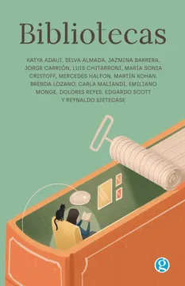

Bibliotecas
Varias autoras
De qué trata
Una obra publicada por Ediciones Godot para celebrar sus 15 años de trayectoria y su obra número 200. Escritores latinoamericanos —Katya Adaui, Selva Almada, Jazmina Barrera, Jorge Carrión y más— cuentan las historias personales detrás de sus colecciones de libros.
Por qué dialoga con Latinoamérica hoy
Este libro es una obra publicada por Ediciones Godot para celebrar sus 15 años de trayectoria y su obra número 200. Explora las historias personales detrás de las colecciones de libros de destacados escritores latinoamericanos.
Más allá de cómo se organizan los libros (alfabéticamente o por colores), el libro se enfoca en las experiencias humanas relacionadas con las bibliotecas: pérdida de libros durante separaciones, la unión de bibliotecas al convivir en pareja, y curiosidades personales, como la de un autor que perdió su "escondite".
También explora el concepto de bibliotecas mentales: esos libros que ya no se poseen físicamente, pero que permanecen en la memoria y sirven de referencia a la hora de escribir.
El libro incluye contribuciones de autores como Katya Adaui, Selva Almada, Jazmina Barrera, Jorge Carrión, Luis Chitarroni, María Sonia Cristoff, Mercedes Halfon, Martín Kohan, Brenda Lozano, Carla Maliandi, Emiliano Monge, Dolores Reyes, Edgardo Scott y Reynaldo Sietecase.